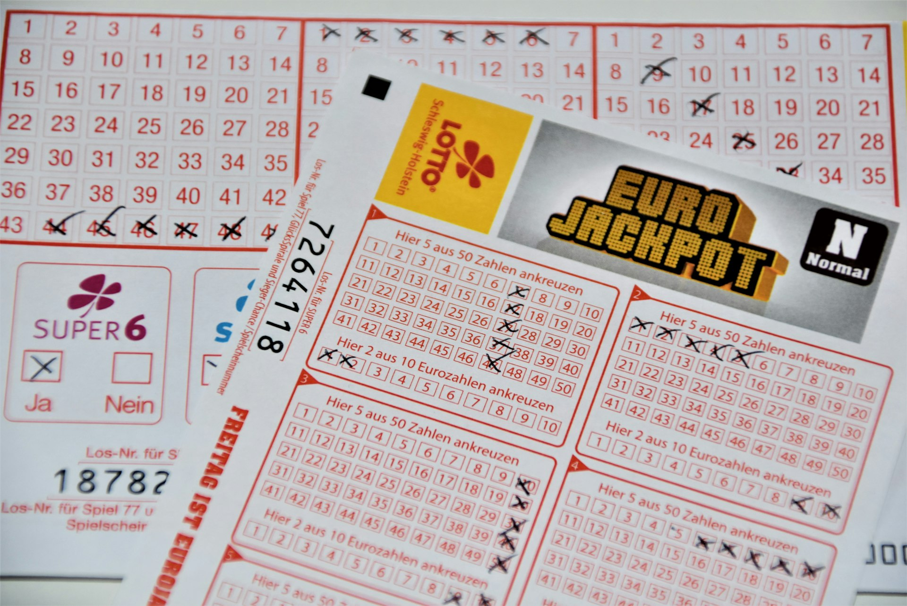
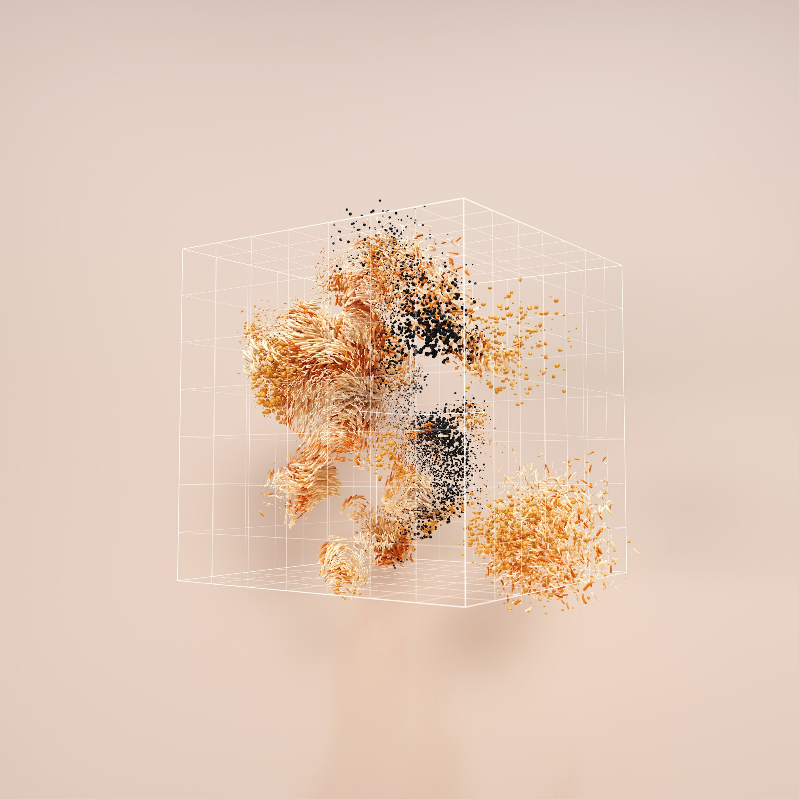
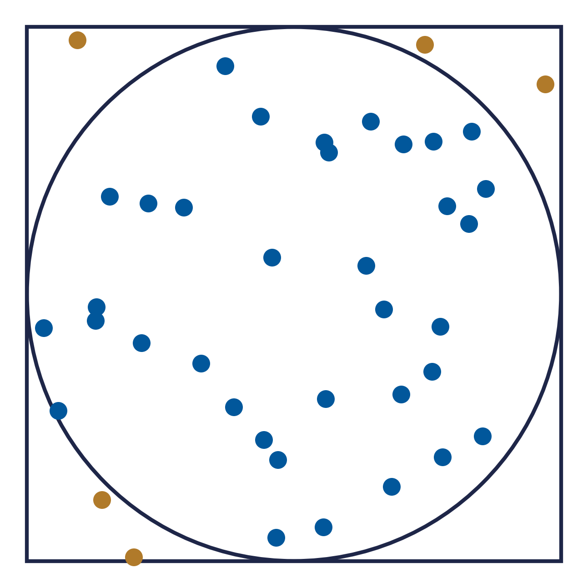
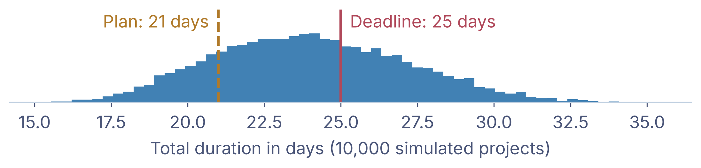
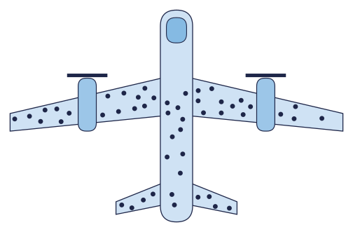

import math
print(math.factorial(52))80658175170943878571660636856403766975289505440883277824000000000000Programming: Everyday Decision-Making Algorithms
When a problem is too big to solve exactly, a bit of randomness often gets you a good answer fast.
Why it matters
Will your project finish on time? In which order should a driver visit 20 customers so that the tour is as short as possible? Questions like these are too complex to calculate exactly. Companies use randomness every day to estimate risks, plan delivery tours, survey customers and learn from a few what is true for the many.
Question: What comes to your mind when you think of randomness?
Notes
Answer: Open question. Typical answers are casinos, lotteries, dice and shuffled cards. Let us collect a few, then show that randomness is much more than gambling.
Today we see how randomness helps computers and people: it makes systems fair and secure, it lets us estimate what we cannot calculate, and it helps us search for good solutions to problems that are too big to solve exactly.




Notes
Some of these are pure chance (casino, lottery, cards), some use chance on purpose (algorithms, cryptography), and nature has used it all along (genetic mutations).
Photos: Unsplash (photo IDs 1517232115160, 1593453917923, 1691213426024, 1717501220725, 1640161704729, 1465146344425), stored locally.
Question: What’s the opposite of randomness?
Notes
Answer: Determinism, predictability and consistency. Life without any chance would be reliable, but also a little boring.
Question: How would you test if dice are fair?
Notes
Answer: Roll them many times and count. Fair dice show each number about one sixth of the time; loaded dice show one number far more often. We do not need to look inside the dice, we only need enough rolls.

Question: Where do you encounter randomness in daily life?
Notes
Answer: Almost everywhere: online shops test versions at random, login codes are random, surveys and tax audits pick people at random, and some universities allocate study places by lottery. Spotify is the surprise: with true shuffle, the same artist sometimes came twice in a row, and users thought the shuffle was broken.
Estimating and searching are our topics today.
Notes
We use randomness on purpose, not only in games. Fairness: when nobody can influence the outcome, nobody is favored. Security: passwords, keys and login codes are random, so attackers cannot guess the next one. Estimating: instead of calculating every case, we try many random cases and count. Searching: random steps help a search escape dead ends and find better solutions.
Question: How can a machine that only calculates produce randomness?
True randomness
Pseudo-randomness
Computers do not roll dice, they calculate. The starting value is called the seed. Same seed, same numbers: that is why your tutorial results are reproducible.
Notes
Answer: It cannot, not really. It calculates numbers that only look random, starting from a seed. For real randomness it needs a physical source, such as noise in its hardware. For simulations, pseudo-randomness is good enough, and the seed makes our results repeatable.
Question: How many possible orders exist for a shuffled deck of cards?
import math
print(math.factorial(52))80658175170943878571660636856403766975289505440883277824000000000000That is more than the number of atoms on Earth.2
No computer can ever go through all of these orders one by one.
Question: So how do we answer questions about card games?
Notes
Answer: 52 factorial, about 8 times 10 to the 67. Earth has roughly 10 to the 50 atoms, so there are about a hundred million billion times more orders than atoms. Every well shuffled deck is very likely an order that has never existed before.
Answer: By playing many games and counting. That is the story on the next slide.
Question: Anybody ever heard of Monte Carlo methods?
Notes
Answer: Monte Carlo methods estimate a result by running many random trials and counting the outcomes. Ulam’s question about solitaire is the classic origin story.
Ulam then used the same idea at Los Alamos, together with John von Neumann and Nicholas Metropolis, for nuclear research: chain reactions in nuclear fission were too complex to calculate exactly, so they simulated them with random numbers and counted how often each outcome occurred.

The idea goes back to Buffon, who in 1777 dropped needles on lined paper.4
Notes
Answer: By throwing random points. A circle fits exactly inside the square. The circle covers π/4 of the square, so that is the share of points that land inside it: about 79 %, so about 79 of 100 random points. So: π ≈ 4 × (points inside / all points). Count them, multiply the share by 4, and we have an estimate of π that gets better the more points we throw.
Buffon asked how likely a needle dropped on lined paper crosses a line. The answer contains π, so dropping many needles and counting estimates π. Laplace later pointed out exactly that.

The recipe: describe each uncertain input as a range, draw random values, repeat thousands of times, count.
Notes
Instead of a single forecast, Monte Carlo gives a range of outcomes with probabilities. The recipe is always the same: describe each uncertain input by a range or distribution, draw random values for all inputs, compute the result, repeat thousands of times, and look at the distribution of results.
A project with three tasks. Each one can take longer than planned:
| Task | Best case | Most likely | Worst case |
|---|---|---|---|
| Requirements | 3 | 5 | 10 |
| Build | 8 | 12 | 20 |
| Test | 2 | 4 | 8 |
The plan adds up the most likely values: 5 + 12 + 4 = 21 days. The deadline is 25 days.
Question: How sure are you that we finish on time?
Notes
Answer: Less sure than it looks. Only 63 % of the simulated projects make the deadline. We can say: four days of buffer sound like a lot, so let us simulate the project and see how often it is really enough.

Notes
On average, requirements take 6 days, build 13.3 days and test 4.7 days, together 24 days. The mean of each task is larger than its most likely value, because the worst case is further away than the best case. So adding up the most likely values gives 21 days, which is too optimistic. We can say: the plan is not wrong because someone was lazy, it is wrong because delays are bigger than lucky surprises, and they add up.
When you can’t calculate it, simulate it.
Question: In which order would you visit 10 cities by plane with minimal total distance?
import math
print(math.factorial(10))3628800Question: What could be a strategy?
Notes
Answer: We cannot see it at a glance: there are 3,628,800 possible orders. Strategies students usually suggest: try all orders, always fly to the nearest city next, or start with any tour and improve it step by step. We look at all three now.
This problem has a name: the travelling salesman problem. We look for the shortest round trip through all cities. It is not the same as the shortest way between two places, which a navigation app finds in a split second.
Question: What could be the problem with this approach?
Notes
Answer: It does not scale. Every additional city multiplies the number of tours, so one hour for ten cities quickly becomes years. The next slide shows how fast.
Notes
Time complexity grows factorially with the number of cities, and memory requirements increase with the problem size as well. Brute force is not feasible for real-world problems.
Problem: the last flights are often very long, because the near cities are already used up.
Question: How would you escape a local optimum?
Notes
Answer: Jump somewhere else and climb again, or sometimes accept a step down. Both ideas use chance, and both come next.
Hill climbing iteratively improves a solution by making small changes. Like climbing in fog, it can only see the immediate surroundings and does not know whether higher peaks exist elsewhere. It can get stuck in local optima and gives no guarantee of finding the global optimum.
Question: Why accept a worse change at all?
A worse step can lead out of a dead end, towards a higher hill.
The name comes from metalworking: heat the metal, then let it cool slowly.6
Notes
Answer: Because a worse step can lead out of a dead end. Without it, we stay on the first small hill we find; with it, we can cross a valley and reach a higher one.
The name comes from metalworking: annealing means heating metal and cooling it slowly, so the atoms settle into a strong structure. Scott Kirkpatrick and colleagues at IBM used this idea for optimization in 1983. The “temperature” says how often a worse change is accepted, and it drops over time.


Randomness is not giving up. Often it is the only way through.
In 1936, the United States elected a president: Roosevelt or Landon.
Question: Which poll would you trust?
Notes
Answer: Most people pick Poll A, because 2.4 million answers sound much safer than 50,000. The next slide shows that the smaller poll was right. We can say: let us vote by show of hands first, and then see what happened.
Why? The magazine took its addresses from phone books and car registrations. In the Great Depression, those were the wealthy.
How you choose matters more than how many you ask.
Notes
We can say: 2.4 million answers did not help, because they came from the wrong people, and more of the wrong people only makes the wrong answer look more certain.
Squire also shows a second problem: Landon supporters were more likely to send the ballot back. So both the choice of addresses and who answered pushed the result in the same direction.

Question: Where would you add armor?
Notes
Answer: Where there are no holes. We can say: most people want to armor the wings and the fuselage, because that is where the damage is, so let us look at which planes we never got to see.
The statistician Abraham Wald said: where there are no holes10
Planes hit in the engines never came back. They are missing from the sample.
This is called selection bias: what we see is not a fair picture of the whole.
Notes
The planes we can look at are the ones that survived, so their holes show where a plane can be hit and still come home. We can say: the holes we do not see, on the engines and the cockpit, are the ones that brought planes down.
A random few can tell us about the many. But only if nobody is missing.
Notes
We can say: before we trust any data, we ask who never had a chance to end up in it, like the planes that never came back or the companies that failed with the same strategy.
Use chance to
Avoid chance when
Notes
Answer: Use chance to explore new solutions, to estimate what we cannot calculate and to learn about the many from a random few. Avoid it where the same input must always give the same result, for example a bank transfer, the dose of a medicine or the brakes of a car.
Remember the Monte Carlo methods: approximations work. Many real-world problems benefit from embracing uncertainty rather than fighting it. Quick approximations enable faster decisions, balance accuracy against computation time, random sampling against complete enumeration.
Randomness is a tool
Chance makes systems fair, secure and unpredictable.
Simulate instead of calculate: Monte Carlo
Many random trials give an honest range instead of a single guess.
Search smarter with chance
Random steps lead out of dead ends.
Sample instead of guess
A few can tell us about the many, if nobody is missing.
Will your project finish on time? In which order should a driver visit 20 customers so that the tour is as short as possible? Questions like these are too complex to calculate exactly. Companies use randomness every day to estimate risks, plan delivery tours, survey customers and learn from a few what is true for the many.
Notes
That’s it for today’s lecture! After the break we look at how AI tools write code, and why there is a bit of randomness in that too. Then we recap the course, each topic with a bit of randomness.
Think Python is free online and a great start. Schrödinger programmiert Python is a playful alternative in German.
For more interesting literature, take a look at the literature list of this course.
Spotify Engineering (2014). How to shuffle songs? https://engineering.atspotify.com/2014/02/how-to-shuffle-songs↩︎
52! ≈ 8 × 1067. Earth has roughly 1050 atoms (order of magnitude).↩︎
Christian & Griffiths (2016), ch. 9.↩︎
Christian & Griffiths (2016), ch. 9.↩︎
Christian & Griffiths (2016), ch. 9.↩︎
Kirkpatrick, S., Gelatt, C. D. & Vecchi, M. P. (1983). Optimization by simulated annealing. Science, 220(4598).↩︎
Christian & Griffiths (2016), ch. 2 and ch. 9.↩︎
Squire, P. (1988). Why the 1936 Literary Digest poll failed. Public Opinion Quarterly, 52(1).↩︎
Squire, P. (1988). Why the 1936 Literary Digest poll failed. Public Opinion Quarterly, 52(1).↩︎
Mangel, M. & Samaniego, F. J. (1984). Abraham Wald’s work on aircraft survivability. Journal of the American Statistical Association, 79(386).↩︎
The main inspiration for this lecture. We have read it and discussed it in depth, always wanting to translate it into a course.↩︎